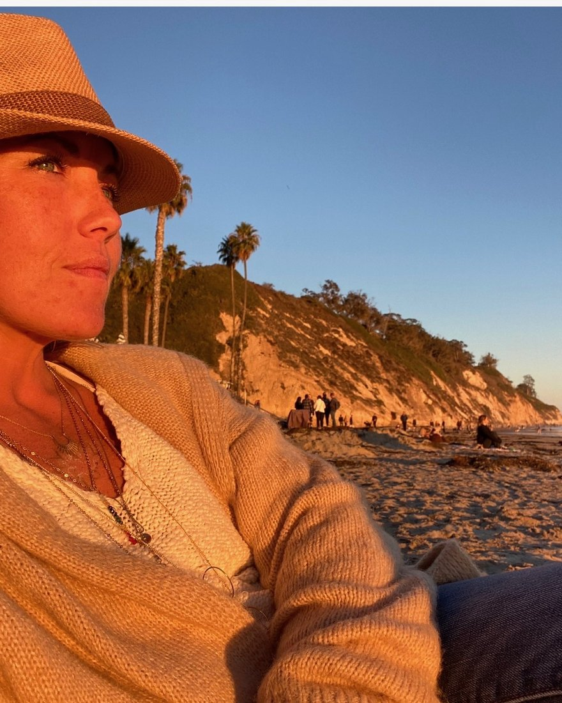

Hello and welcome
My work serves the journey of the soul: helping you live the dharma and the purpose you came here to fulfill.
Everything I offer was first given to me. My coaching draws on years of study with lineage holders across acting, leadership, transformation, yoga, meditation, and Buddhism. Each tradition opened a different doorway into the same truth, and together they shape how I listen, guide, and walk beside the people I work with.
I have been a student of teachers who carry living lineages, each one handed down from teacher to student over generations. This is the ground my coaching stands on. And it is why I teach: I am grateful for every teacher I have ever had, and passing on what they gave me is how I honor them.
What this work does
Coming home to yourself
When life feels scattered, stuck between chapters, or lived entirely from the head, this work gives you the felt permission to drop beneath the noise and trust what you find there.
- Permission to be in transitionunafraid of the in‑between
- Presenceslow down and feel what is true
- Depth without heavinessdeep work that feels alive
- Alignment with purposework and soul, one direction
- Practical embodimenta practice to live, not only an epiphany
- Sustainable fuelenthusiasm is part of the medicine
I help you feel safe enough to open, and clear enough to live from what you find.
My commitment
These are not my teachings. I have received the empowerments to teach, and my part is to share what has been shared with me.
I hold that as a responsibility and a gift. What my teachers passed to me was never meant to stop with me. It is meant to move through me, person to person and heart to heart, in service of your highest and most aligned path.
To that end, my work is simple: to empower, to align, and to create connections that elevate.
Who this coaching is for
For finders of truth, not only seekers
This work is for those who want to be finders of truth, rather than seekers of an elusive point of arrival.
Seeking can go on forever, always one more book, one more retreat, one more someday. Finding happens here, in your own heart and your own life. If you are ready to stop circling and start living your dharma, with peace, clarity, and purpose, this coaching is for you.
Start here
Book a free discovery call
A relaxed conversation about where you are, where you want to go, and whether working together feels right.